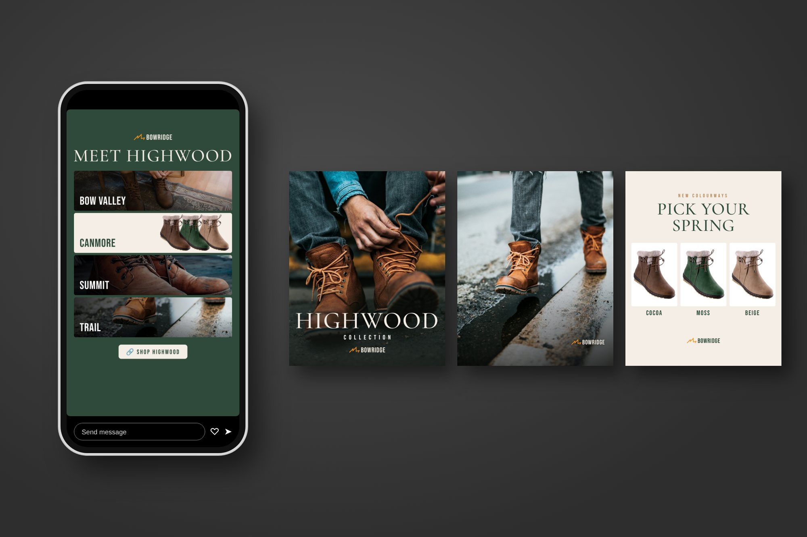
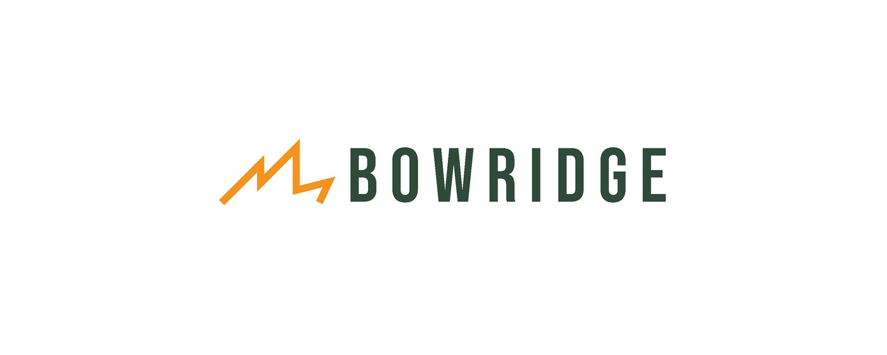
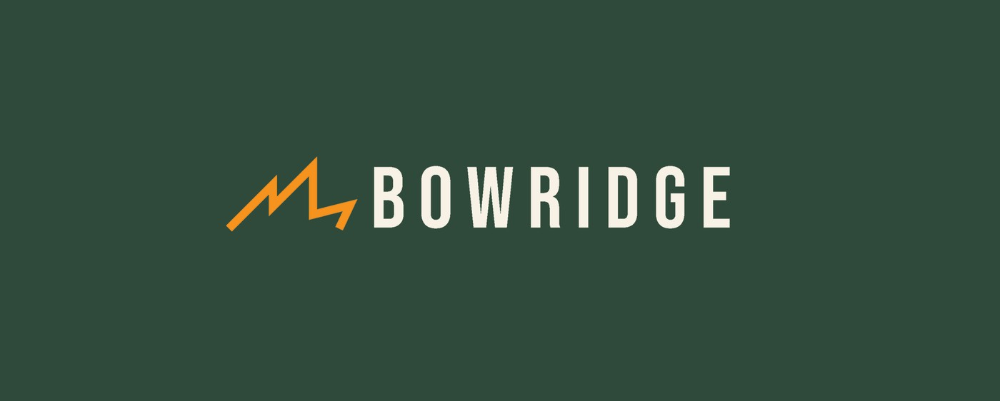
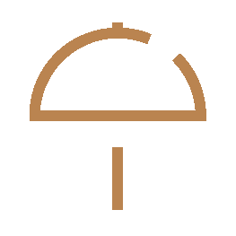
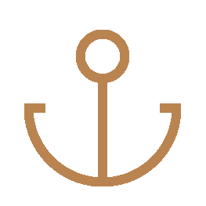
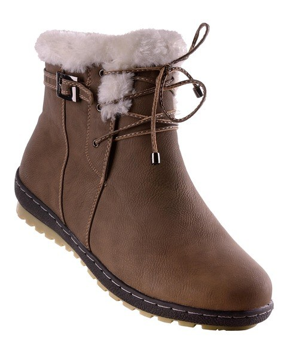
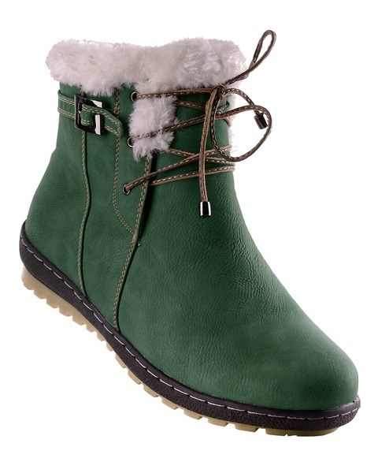
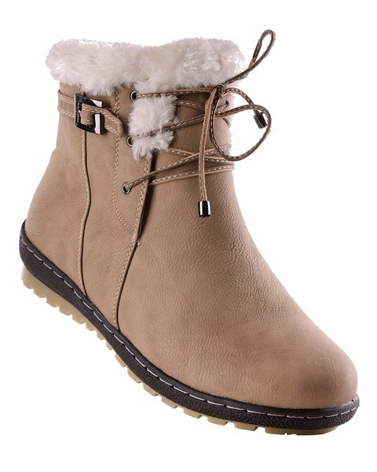
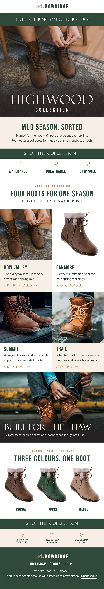
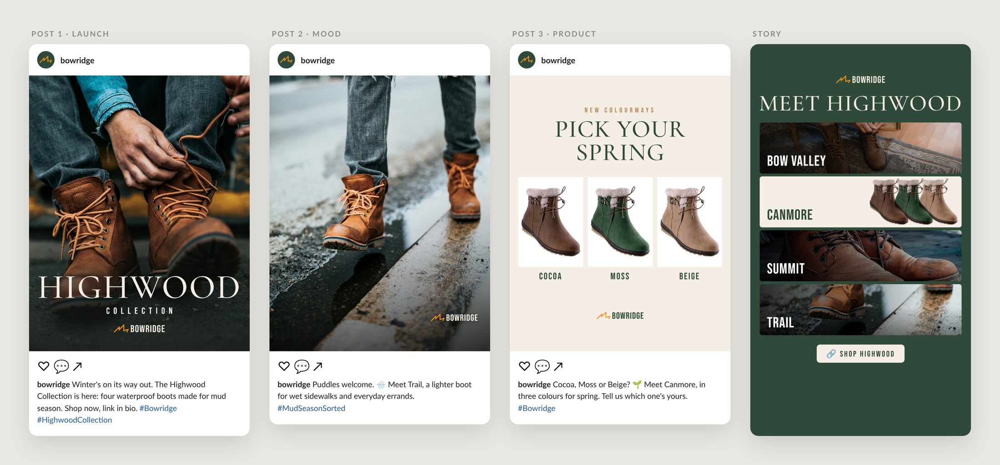

Bowridge spring campaign
A launch email and Instagram campaign for the Highwood Collection, the spring range from Bowridge, a made-up Calgary boot brand.
- Discipline
- Brand and campaign design
- My role
- Brand designer, art director, retoucher, copywriter
- Type
- Concept project
- Deliverables
- Brand basics, launch email, 3 Instagram posts and a story
- Tools
- Illustrator, Photoshop

Overview
Bowridge is a boot brand I created, based in Calgary. For its spring launch, I designed the campaign for the Highwood Collection: four waterproof boots made for the messy weeks between winter and summer.
Bowridge is made up, and the photos are stock. The brand, layouts, retouching and copy are my work.
The idea
- Mud season, sorted. Spring in Calgary means slush, puddles and muddy trails. The campaign promises one boot that handles all of it.
- Why Highwood. The collection is named after Highwood Pass in Kananaskis, a mountain road that is closed all winter and opens again each spring.
- One brand, four boots. Bowridge is the brand, Highwood is the collection, and Bow Valley, Canmore, Summit and Trail are the boots inside it.
Who it’s for
Primary audience
Calgary adults who walk, commute and hike through spring, and want one boot that handles slush, puddles and trails.
Secondary audience
Gift buyers looking for a warm, well-made boot for someone else.
Process
Research
I studied launch emails from heritage boot brands. The strongest ones shared a pattern: a full-width lifestyle photo, a large collection name in an elegant serif, a short story and one clear button. I used that structure as a starting point, with Bowridge’s own colours, type and voice.
Finding the type
I compared tall condensed sans serifs for the headlines, including Bebas Neue, Oswald and Barlow Condensed, then tested a heritage serif for the collection name. The mix of Felix Titling and Bebas Neue gave Highwood a premium feel while keeping headlines bold and readable on a phone.
Choosing a colour direction
I tested a warm brown version and a forest green version of the campaign. Brown blended into the leather boots, while green made the product stand out and felt more like spring, so green became the brand colour.
The logo
The mark is a single ridge line, drawn like a mountain skyline and a trail climbing over it. It sits beside a tall, spaced-out wordmark in Bebas Neue, so the name reads clearly even when it’s small. There are two versions: green on light backgrounds, and cream on green.


Visual identity
Forest green carries the brand, the same green as spring moss and pine. Cream keeps backgrounds warm, leather tan picks up the colour of the boots, and trail orange in the mark adds energy.
Type
Felix Titling gives the collection names a heritage feel. Bebas Neue keeps headlines and labels bold and easy to read on a phone, and Lato handles the body text.
Icons
Simple line icons turn the boot’s features into quick reads.

Waterproof
Grip soleRetouching
Canmore needed three colourways, but there was only one product photo. I recoloured the original cocoa Canmore boot into moss and beige in Photoshop, keeping the fur collar, laces, stitching and sole untouched, so each version looks like its own product shot.



Launch email
A 600-pixel email that moves from the collection to each boot, then to the perks and the small print every marketing email needs.
- A heritage-style hero. The collection name sits large over the Bow Valley photo, in the style of classic boot brand emails.
- Every boot gets a card. Bow Valley, Canmore, Summit and Trail each have a photo, one line and their own shop link, so the four-boot range is clear at a glance.
- No prices on purpose. Leaving prices off sends people to the product pages to find out more.
- Clear actions. Each section ends in one button or link.
- Subject line and preview text. “Mud season, sorted.” repeats the campaign line, and “Meet the Highwood Collection: four waterproof boots for spring.” says what’s new, so the email makes sense before it’s opened.

Three posts and a story, planned to be posted in order: the launch first, then the mood, then the product. Real brand feeds mix plain photos with designed posts, so the set does the same, and the captions carry part of the message. The story leaves room for Instagram’s own link sticker, so the link stays tappable and readable by screen readers.

Takeaways
The hardest part of Bowridge was the photography. I had to find free stock photos of boots that looked like they belonged to one brand. Most shots came from different shoots, with different lighting, and several boots still had another brand’s logo on them. There was also only one photo of the Canmore bootie, so I recoloured it to create the three colourways instead of searching for more.
Naming was the next challenge. Once there were four boots, the email had to make it clear which boot was which, so I rebuilt it so each boot has its own card, photo and link. It taught me that a campaign only works when the structure is clear, and that the copy needs as much care as the visuals.
Finally, designing for a phone kept every decision simple: bold headlines, short lines and one clear action per section.